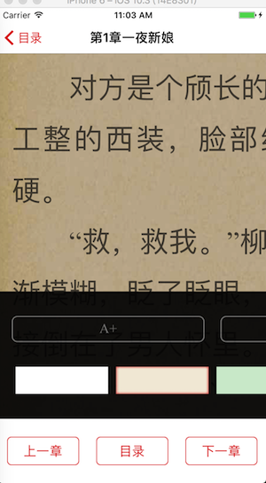
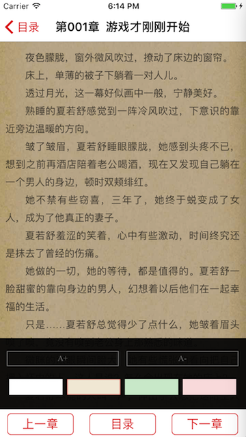

WKWebView 禁用双击缩放和横向滚动
Jump to Section
遇到问题
WKWebView 加载h5的小说阅读页面
-
放大缩小手势会放大和缩小网页，这是我们不需要的！
-
当点击放大字体和缩小字体时，双击就会导致网页整体放大！如下图所示：

解决问题
WKWebView 禁用 Zoom
self.webView.scrollView.alwaysBounceVertical = YES;
self.webView.scrollView.showsHorizontalScrollIndicator = NO;
self.webView.scrollView.bouncesZoom = NO;
Html 的放大缩小禁用
- 加入顶部 DOCTYPE dtd
<!DOCTYPE html PUBLIC "-//WAPFORUM//DTD XHTML Mobile 1.0//EN" "http://www.wapforum.org/DTD/xhtml-mobile10.dtd">
- 加入meta 禁止缩放的信息
<meta name="viewport" content="width=device-width, initial-scale=1.0,maximum-scale=1.0, minimum-scale=1.0, user-scalable=no">
Input 标签的替换
- 上面的方法都做了之后，双击A+ 、A- 按钮的时候，WebView还是被放大了。然后我就去看传过来的Html源码了，发现 我们的 A+ 、A- 按钮为了做按钮样式方便, 都是使用的 Input 标签，然后我们把 Input 标签都换成了 div 标签。这样问题就彻底解决了！
